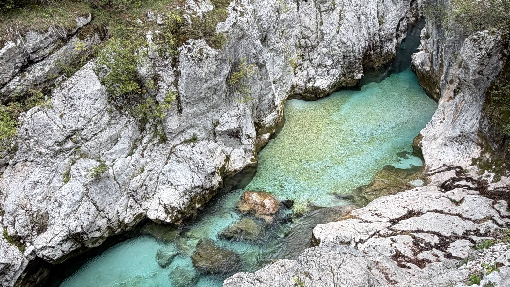
This might have been my favorite thing I did in all of Slovenia. It's a long, mostly riverside walk down the Soča from Trenta to Bovec, past emerald pools, suspension bridges and the Great Soča Gorge. It was gorgeous, and it's a can't-miss. No car is needed: take the early bus up and walk back to Bovec.
| Distance | About 21 km (official stage: 20.9 km) |
| My time | About 6 hours, starting around 7:15am, with lots of photo stops |
| Difficulty | Easy to moderate. Mostly easy riverside walking; it's moderate mainly because it's long, plus a couple of short rocky stretches. (Official: ~570 m up, ~740 m down) |
| Start | Trenta visitor center |
| Finish | Bovec |
| Getting there | Early bus from Bovec to Trenta |
This hike sits inside two bigger trails. Here's how they fit together, from biggest to smallest:
Runs from the foot of the Grossglockner, Austria's highest mountain, through Slovenia to Muggia on the Adriatic coast in Italy. Each stage is designed as a day's walk of roughly 20 km and is signposted, so you can do a single stage without committing to the whole thing. More about the Alpe-Adria-Trail →
Triglav National Park's trail along the Soča. It starts at Izvir Soče, the river's source, and follows the river down to Bovec. From the village of Trenta onward, the Alpe-Adria-Trail follows the same path.
I skipped the first stretch from Izvir Soče (I needed to be back in Bovec by mid-afternoon) and started at the Trenta visitor center, then walked all the way back to Bovec. That's stage 24 of the Alpe-Adria-Trail, which is often called one of the most beautiful stages on the whole route. Having walked it, I'd believe it.
GPX and KML files are routes that hiking and map apps can open, so you can follow the trail on your phone and see where you are, even without cell service.
This route is traced from the GPS on my photos. It stays within a few meters of the marked trail but is simplified between photos. My photos stop about 2 km before Bovec; from there, just follow the signs into town.
Start high up the valley and walk back down to Bovec.
The Soča Trail officially starts at the source of the Soča, higher up the valley, but I had to be back in Bovec by mid-afternoon. So I took the 6:30am bus from Bovec up to the Trenta visitor center and started walking from there. Apparently that stretch is the most beautiful part of the whole trail anyway, and it was gorgeous and so peaceful.
The trail is signposted the whole way.
Look for the Soška pot / Soča Trail signs with the red, green and blue river logo. The first stretch follows the river down through the Trenta valley, with mountains on both sides.
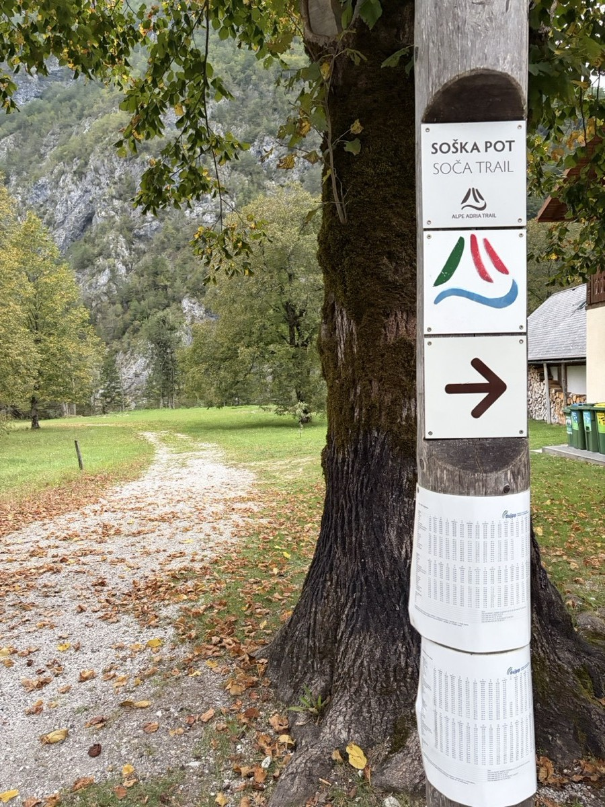
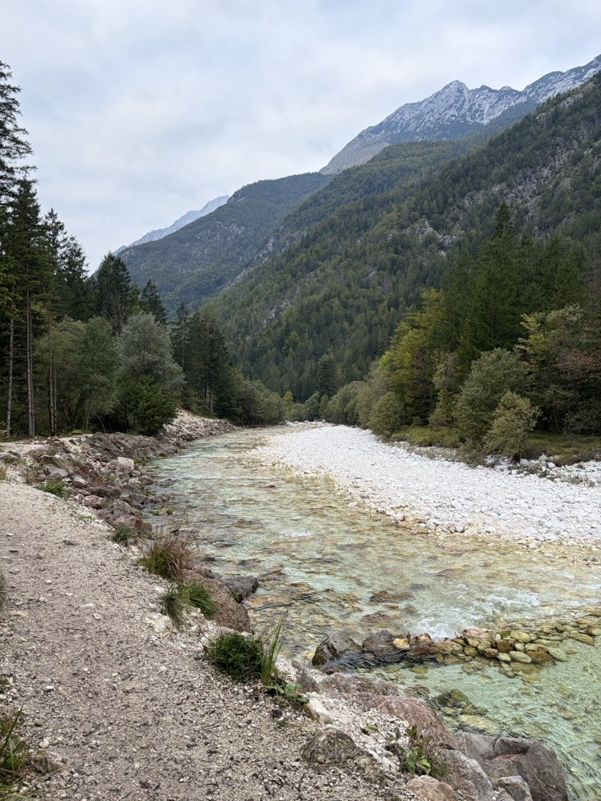
This is the Soča everyone talks about.
This is where the water turns that unreal emerald color, squeezed between walls of white limestone. I was the only person on the trail for most of the morning.
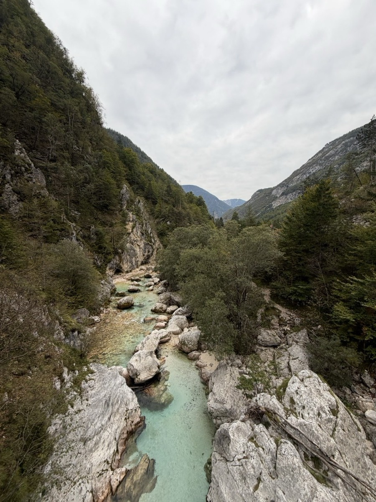
The trail crosses the Soča several times.
The trail crosses the river on wooden suspension bridges, with views straight down into the water. Keep an eye out for the big Soča Trail information boards along the way, which show the route and where you are on it.
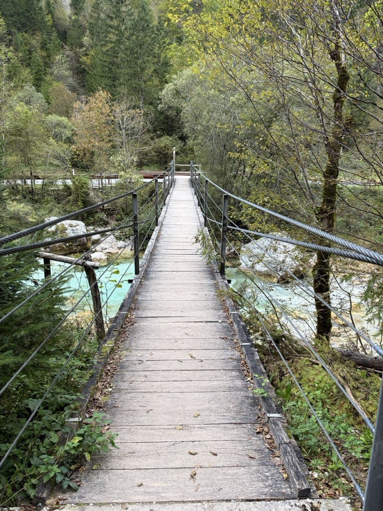
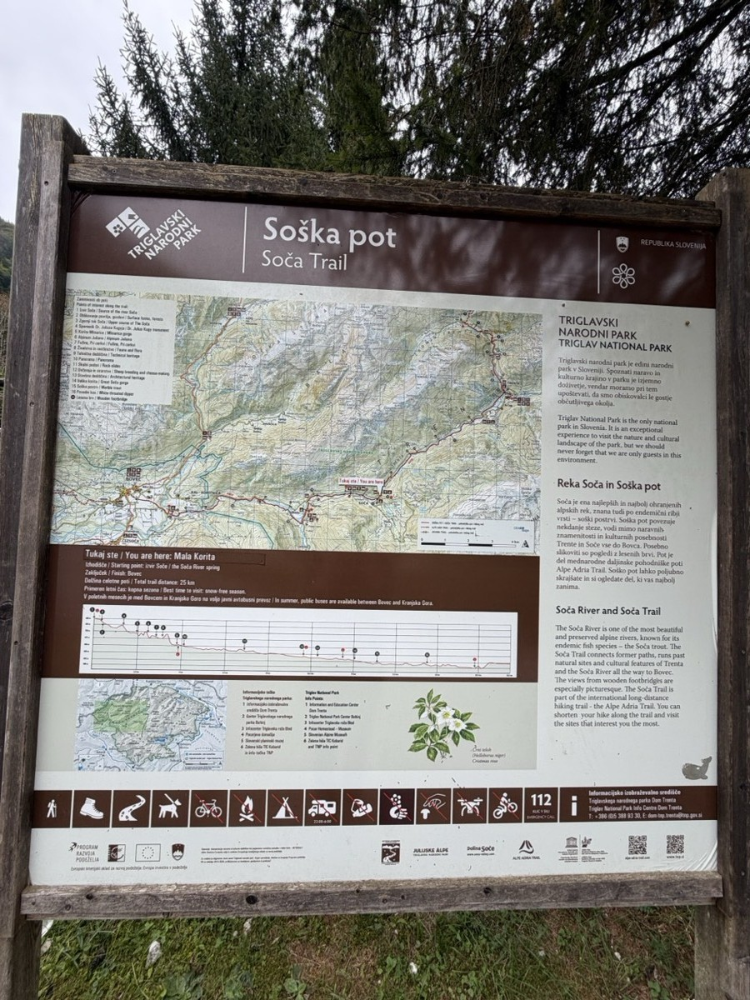
A tiny village and its white church, about halfway.
Around the halfway point, the trail passes the little village of Soča and its white church, set against the mountains. A short way further on, the river drops through another rocky gorge with small waterfalls and deep turquoise pools.
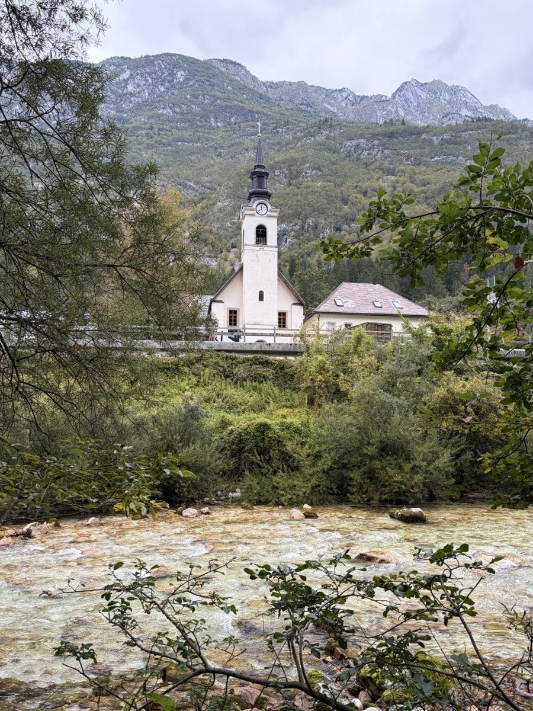
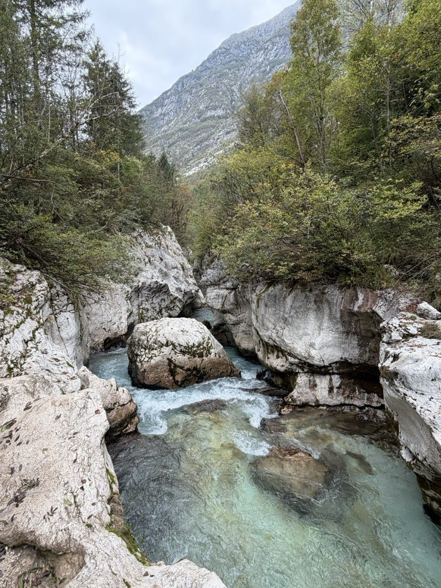
Absolutely beautiful, and the busiest spot on the trail.
The Great Soča Gorge (Velika korita) is absolutely beautiful, but it was definitely more crowded than anywhere else I went, even in the off-season. Up until this point I'd had the trail almost to myself. It's still a must. Just don't expect to have it to yourself.
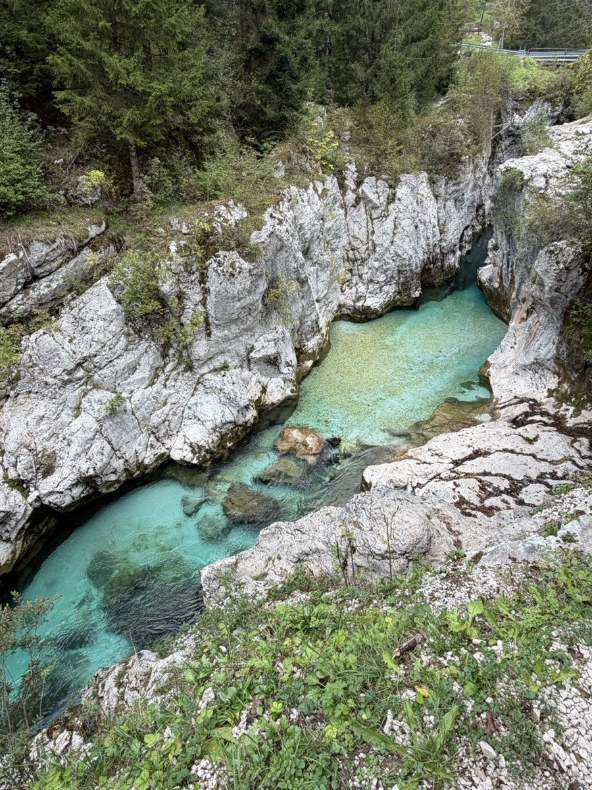
A little more turquoise water, then away from the river and into town.
After the gorge there's more turquoise water for a while, but the final stretch leaves the river and heads into Bovec. I walked the whole way back into town, arriving in the early afternoon.
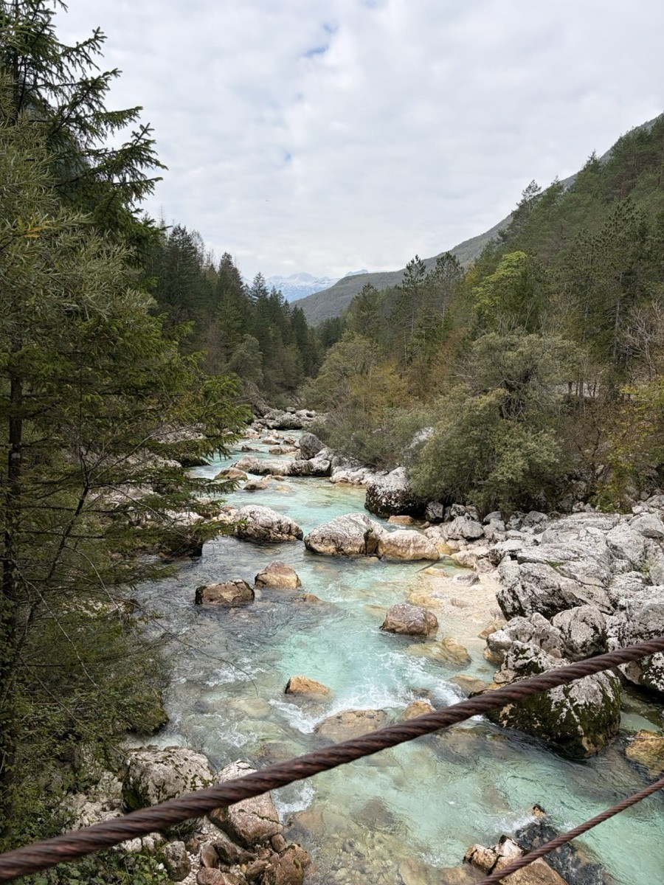
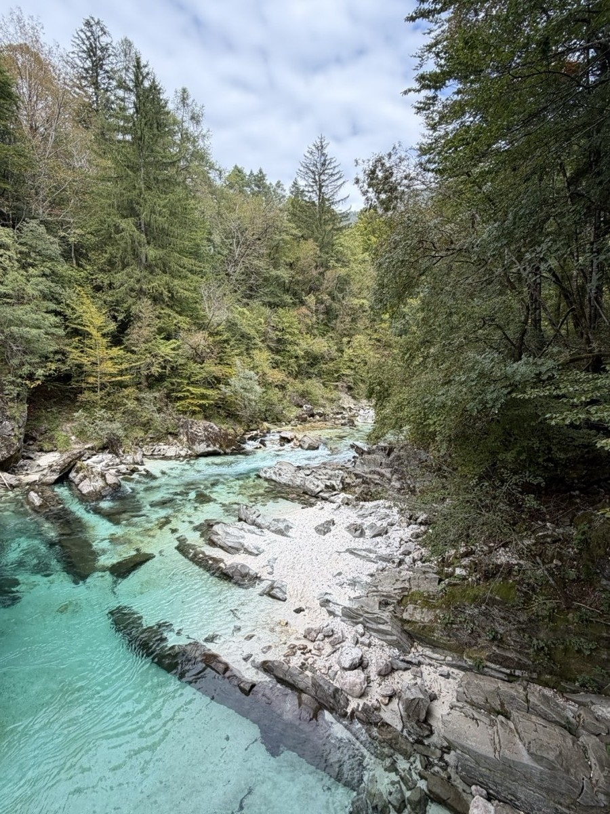
I carried all my food for the day. For the rest of my Slovenia packing list, see What to Pack for Slovenia →